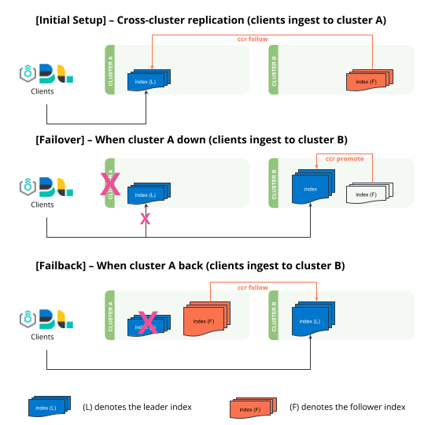

Tutorial: Disaster recovery based on uni-directional cross-cluster replication
editLearn how to failover and failback between two clusters based on uni-directional cross-cluster replication. You can also visit Bi-directional disaster recovery to set up replicating data streams that automatically failover and failback without human intervention.
-
Setting up uni-directional cross-cluster replication replicated from
clusterAtoclusterB. -
Failover - If
clusterAgoes offline,clusterBneeds to "promote" follower indices to regular indices to allow write operations. All ingestion will need to be redirected toclusterB, this is controlled by the clients (Logstash, Beats, Elastic Agents, etc). -
Failback - When
clusterAis back online, it assumes the role of a follower and replicates the leader indices fromclusterB.

Cross-cluster replication provides functionality to replicate user-generated indices only. Cross-cluster replication isn’t designed for replicating system-generated indices or snapshot settings, and can’t replicate ILM or SLM policies across clusters. Learn more in cross-cluster replication limitations.